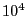

Next: Improving ranges for variables Up: Tolerances and user-scaling Previous: Why scaling and geometry
Keeping the lessons of the previous section in mind, we recommended that right-hand sides of inequalities representing physical quantities (even budgets) should be scaled so that they are on the order of  or less. The same applies to variable domains, as variable bounds are again linear constraints.
In the case of objective functions, we recommend that good solutions should have an optimal value that is less than , and ideally also above one (unless the objective coefficients are all zero). This is because the OptimalityTol is used to ensure that reduced cost are close enough to zero. If coefficients are too large, we again face difficulties in determining whether an LP solution truly satisfies the optimality conditions or not. On the other hand, if the coefficients are too small, then it may be too easy to satisfy the feasibility conditions.
The coefficients of the constraint matrix are actually more important than the right-hand side values, variable bounds, and objective coefficients mentioned here. We'll discuss those shortly.